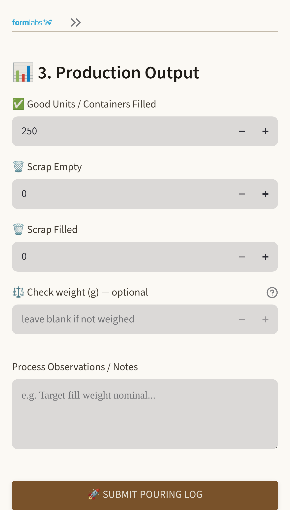

Resin Pouring — Production Logging
Questions we cannot answer today
- How many units did we pour last Tuesday — and how many did we scrap?
- Was that scrap empties or filled containers? They cost very different amounts.
- How long was Pump 2 down last week, and what for?
- Which resin lot went into the cartridges that shipped on the 14th?
Every one of those is answered from memory, or not at all. Resin pouring has never had a production record.
Nothing below asks a manager to enter anything. The operators log at the pump; everything else is read back out of that.
What an operator does
Once an hour, at the pump, on their own phone. No app to install — it is a web page on the plant network.
- Pick the pump, container format and resin.
- Type the lot code off the bottom of the container.
- Enter units filled and scrap. Submit.
That is the whole operator screen.
What it costs to try
- Runs on one PC already on site.
- No software licences, nothing charged per person.
- Operators use the phone they already carry.
- No scheduling, assigning or approving by anyone.
- Stopping it is deleting a folder — nothing else depends on it.

What that gives you
The numbers, by anything
Units, scrap and first-pass yield — by day, shift, operator, station or resin, comparable week to week.
Downtime with a cause on it
Minutes lost ranked by reason, so the case for fixing something is a number rather than an impression.
Traceability
Which lot went into which containers, at which pump, by whom and at what hour — without a paper search.
Out of the system
Any filtered view exports to CSV. The shift handover comes out as a PDF, emailed automatically if you want it.
It installs as a log and nothing else — the only setup is the list of pumps. Assigning work to stations is switched off until somebody switches it on; fill-weight limits, the floor display and the handover email are each one setting, and none is needed to record a pour. Day one changes nothing on a manager's desk.